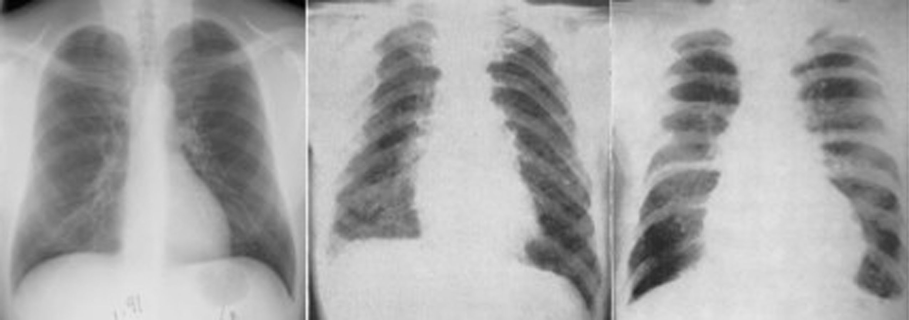

A Tungsten Carbide and Cobalt Pulmonary Disease
In the early twentieth century, Germany developed a metal alloy that would be used in many different industries (1,2). Tungsten carbide (WC) and cobalt (Co) is an alloy that is hard enough to cut and polish many different metals, hard woods, and diamonds. The alloy is produced when tungsten carbide powder and cobalt powder are heated to approximately 1,500 oC under high-pressure (Figure 1). The resulting product is approximately 80% tungsten carbide and 10-20% cobalt and may contain other metals (3). The cobalt binds the tungsten carbide molecules together and makes the material very resistant and approximately as hard as a diamond (1). Because of this it is used in high-speed cutting, drilling, grinding, or polishing of hard materials (4).

Figure 1. The hard-metal production process (2)
Case Studies
Workers who are exposed to the powdered forms of tungsten carbide and cobalt (<10mm) are more susceptible to the disease because of the dust and aerosol particles in the air (2, 5). Occupational exposure to potentially dangerous substances is often of great concern to government organizations and university-based hospitals. The Center for Disease Control released an article in 1992 about a 35-year-old industrial plant worker who had been exposed to aerosolized tungsten carbide and cobalt powder. In 1989 he had reported 21 months of shortness of breath and a chest radiograph showed interstitial abnormalities. An open-lung biopsy showed interstitial fibrosis, many macrophages, and multinucleated giant cells in the alveolar spaces (air sacs in the lungs). Upon testing of the biopsy, no tungsten or cobalt was detected. A year before his biopsy, a supervisor at the same plant, who had worked in the same department, died of acute pulmonary fibrosis and was diagnosed with hard metal pulmonary disease. A biopsy a few years prior to his death had shown multinucleated cells, interstitial fibrosis, and macrophages that are consistent with multiple pulmonary diseases. They reexamined his biopsy and detected the presence of tungsten but not cobalt. After these two occurrences, OSHA investigated the airborne cobalt levels in the plant and found in one instance the levels at 90% of the OSHA PEL. The process of the metal coating was adjusted and radiographs were taken of the 40 metal-coating employees (5).
The first reported occurrence of a pulmonary disorder associated with hard metal production or use was in 1940 in Europe (1, 2, 5). Twenty-seven workers who had been exposed to hard metal dust were examined after working in a hard metal factory that had been in operation for two years. Radiographs of the chest were taken of each worker and eight of the workers showed reticular shadowing in areas of fine nodulation, which suggested the beginning of pneumoconiosis (inflammation followed by scaring of the lung tissue) (2, 6). Also, in 1951 two men who had worked with the powders for 10 and 30 years had radiographs taken of their chests. They had suffered from dyspnea and the latter died from cardiac failure due to emphysema and chronic bronchitis (2).

Figure 2. Radiographs of healthy lung (left), 13 year (middle) and 23 year (right) exposure.
Case studies of hard-metal workers were performed from the 1940s to 1960s. Radiographs were taken of each worker. Figure 2 is a radiograph of healthy lungs and figures 3 and 4 are radiographs of lungs from a man who mixed the powders for 13 years and sharpened for 23 years, respectively. The patient in Figure 2 center has heavy hilar (openings by which nerves, ducts, or blood vessels enter or exits organs) shadows and profuse micro-nodular opacities. Most of his problems occurred in the mid and lower zones of his lungs. Figure 2 right shows that the second patient has an enlarged heart and small nodules. Also, he had an increase in translucency at the right base with destruction of both costophrenic angles (where the diaphram meets the ribs). Both patients had an increase in linear markings (2). As can be seen from the case studies discussed and the radiographs of these two patients, hard-metal workers who are susceptible to this disease have a poor prognosis.
What are the Symptoms of Hard-metal Disease?
There are many signs/symptoms of hard-metal disease. A patient may have tightening of the chest, cough, clubbing, external dyspnea (shortness of breath), fatigue, the production of sputum, and weight loss. Once the patient experiences some of these symptoms and seeks the advice of a medical professional, a radiograph is usually taken of the lungs. The usual finding is interstitial patterns suggesting fibrosis (8).
What Signifies Hard-metal Disease?
Once a radiograph shows interstitial fibrosis, a biopsy is taken of the lungs. The presence of tungsten carbide is the first indicator. Cobalt is not normally present because of its high biological solubility (5). The biopsy usually shows the presence of macrphages and multinucleated giant cells (Figure 3) that have engulfed the surrounding cells (4, 8).

Figure 3. Multinuclear giant cells engulfing the cells nearby (4)
Will All Hard-metal Workers Develop the Disease?
No. There is no correlation between the lengths of time working in the industry as compared to the progression of the disease. Some workers are individually sensitive to the particles (3). Researchers have attempted to suggest a route or mechanism of cause but have not been entirely successful. Some have suggested an autoimmune disease (3). It is believed that cobalt in the presence of tungsten carbide is what exacerbates the disease. Tests have been performed on rats, guinea pigs, and mini-pigs and tungsten metal and carbide alone did not reproduce the same results as when cobalt was present. Most of the animals showed the presence of the multinucleated giant cells and macrophages but the research was incomplete and did not produce a proper mechanism by which the disease takes place.
A Hypothesis on the Effect of Cobalt in the Lungs
A Fenton-like reaction can occur that causes cobalt to replace ferrous ions for the transportation of oxygen. This can produce hydroxyl radicals, which are referred to as an activated oxygen species (AOS). When cobalt and tungsten carbide particles are in close contact, electrons are donated by cobalt to the surface of the tungsten carbide particle surface. These can then in turn reduce oxygen to generate an AOS. The oxidized cobalt then goes into solution. This provides an explanation as to the reason cobalt is usually not found in a biopsy. Lison et al. had not completed the research required to confirm this hypothesis. They also give this radical formation as a reason only 1-5% of the hard metal industry’s population actually develops the disease. If a worker does not have a strong antioxidant defense then they may not be able to neutralize the radicals before damage has occurred (9).
Treatment
Unfortunately no cure has been developed. Once diagnosed, cortisteroids are the form of treatment but usually do not reverse the effects of the disease. Once contracted, the prognosis is poor (3, 4).
Regulations
OSHA has set the limit of hard metal in the air at 50 mg/m3. This will hopefully prevent workers from becoming sensitive or protect those who have already become hypersensitive to the particles (5).
References
- Fischbein, A.; Luo, J. J.; Solomon, S. J.; Horowitz, s.; Hailoo, W.; Miller, A. Clinical findings among hard metal workers. Brit. J. Industr. Med. 1992, 49, 17-24.
- Bech, A. O.; Kipling, M. D.; Heather, J. C. Hard Metal Disease. Brit. J. Industr. Med. 1962, 19, 239-252.
- Ruediger, H. W. Hard Metal Particles and Lung Disease: Coincidence or Causality? Respiration 2000, 67, 137-138.
- Cleveland Clinic. Occupational Lung Diseases. (accessed 22 September 2008).
- Center for Disease Control. Pulmonary Fibrosis Associated with Occupational Exposure to Hard Metal at a Metal-Coating Plant—Connecticut, 1989. (accessed 22 September 2008).
- Aetna InteliHealth. Pneumoconiosis. (accessed 30 September 2008).
- HubPages. Air Purifiers: What are they? And do you need one? (accessed 29 September 2008).
- Haz-Map: Occupational Exposure to Hazardous Agents. Hard Metal Disease. (accessed 22 September 2008).
- Lison, D.; Lauwerys, R.; Demedts, M.; Nemery, B. Experimental research into the pathogenesis of cobalt/hard metal lung disease. Eur. Respir. J. 1996, 9, 1024-1028.
Author: Morgan Moyer
- Alzheimer's 1 2
- Antibiotics
- Antifouling Paint
- Arthritis
- Ayurvedic Medicine
- Breast Feeding
- Cancer Therapy
- Cattle Feed
- Cerebral Ischemia
- Chelation Therapy
- Chernobyl
- Chicken Feed
- Chocolate
- Cigarettes
- Coal 1 2
- Copper Mining
- Cremation
- Diabetes
- Electronic Waste
- Hat Making
- Hard Metal Disease
- Hybrid Cars
- Imaging 1 2 3 4
- Industrial Pollution
- Jewelry Allergy
- Lead Poisoning
- Lewisite
- Magnetic Particles
- Makeup
- Mountain Top Removal
- MRI Imaging
- Neurotoxicity
- Nuclear Power
- Nuclear Weapons
- Ouch Ouch Disease
- Peripheral Neuropathy
- PET Imaging
- Photodynamic Therapy
- Phytoremediation
- Pregnancy
- Radioactivity 1 2
- Seafood
- Sunscreens
- Tattoos
- Vaccines
- Wound Healing